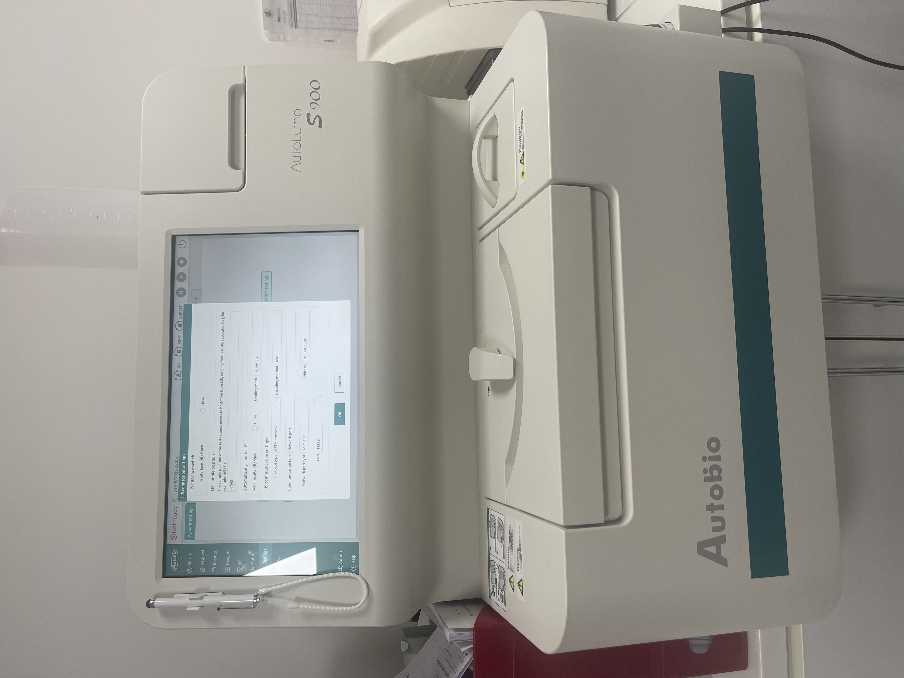
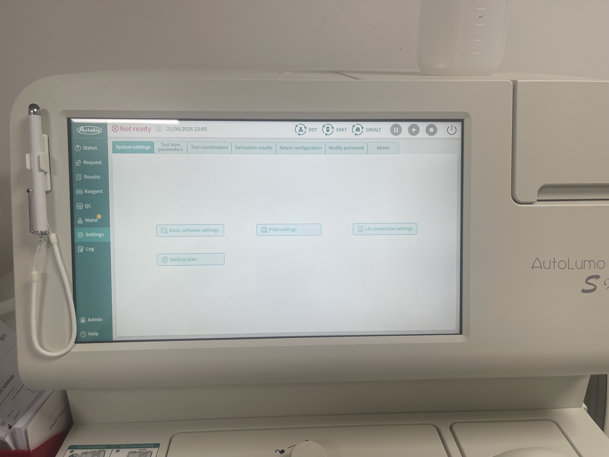
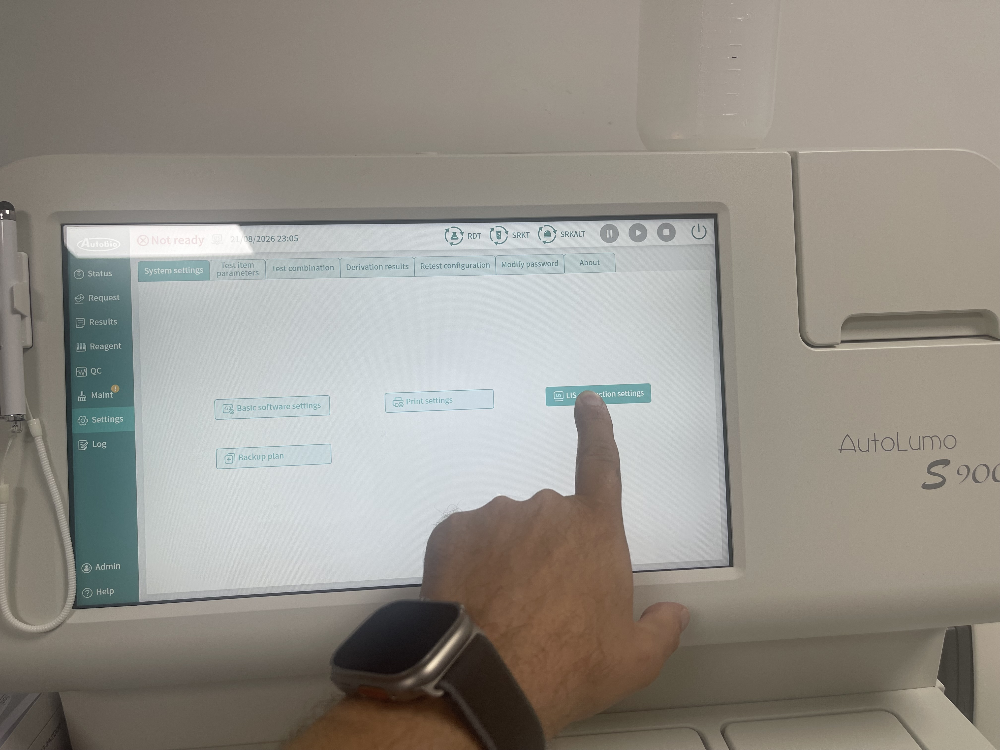
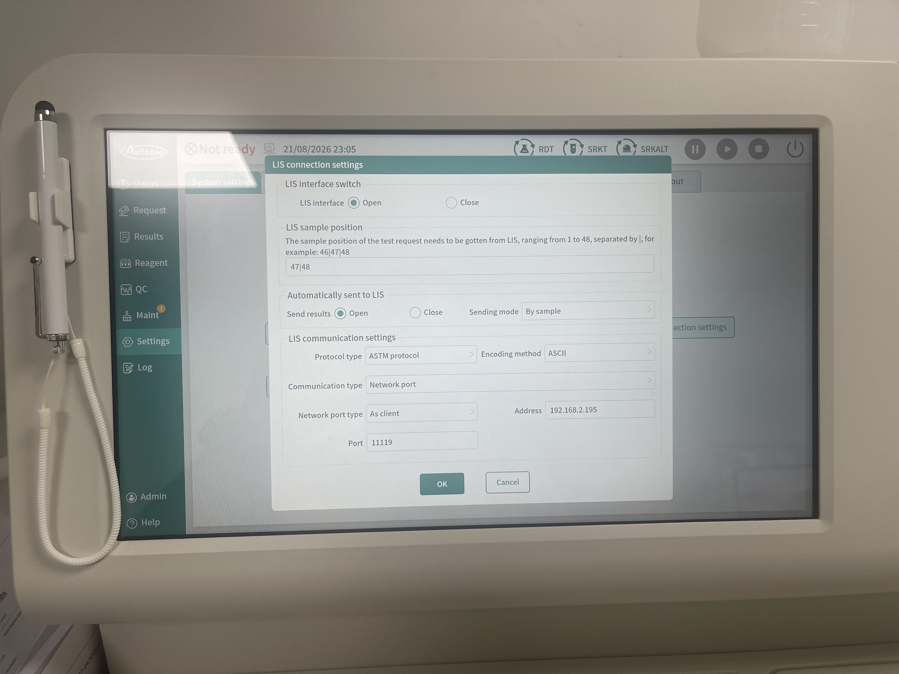

Ghid din capturi locale
Autobio AutoLumo S900
Configurare LIS pentru readerul WiseMED. Valorile IP din capturi sunt un exemplu de instalare; folosește adresa calculatorului readerului și portul configurat în aplicație.
ASTM protocolASCIITCP/IPPort 111191. Deschide LIS connection settings
- Din bara laterală deschide Settings.
- Intră în System settings și deschide LIS connection settings.
- Setează LIS interface = Open.
- La Send results, selectează Open. Captura arată Sending mode = By sample.
2. Setează comunicarea ASTM
- La Protocol type, selectează ASTM protocol.
- La Encoding method, selectează ASCII.
- La Communication type, selectează Network port.
- Cu readerul WiseMED în mod server, setează Network port type = As client.
- La Address, completează IP-ul calculatorului readerului și la Port setează
11119, identic cumodules.transport-tcpip.port. - Confirmă cu OK.
Nu copia adresa din captură. Adresa și portul trebuie să corespundă exact configurației locale a readerului.
3. Trimiterea rezultatelor
Cu Send results = Open și modul By sample, aparatul expediază automat către LIS rezultatele închise pentru probă. După o analiză de test, verifică în Logs WiseMED mesajul PARSED ASTM PACKAGE și apariția rezultatului în cerere.
4. Capturi din aparat
{kind=link}

{kind=link}

{kind=link}

{kind=link}
